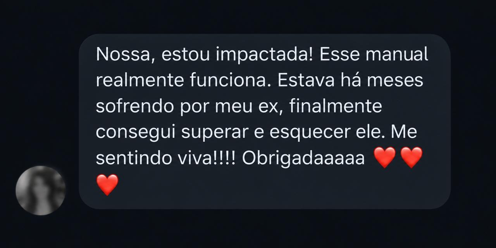
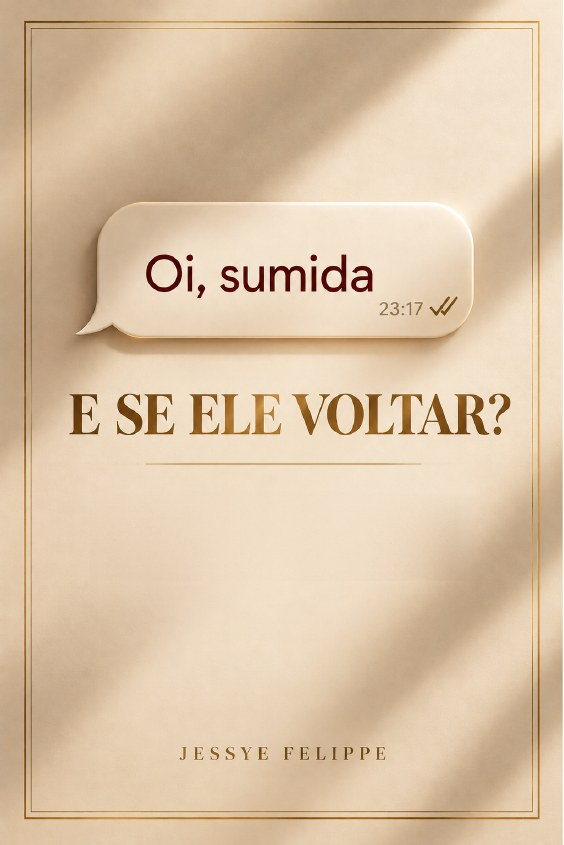

E não, você não tem dedo podre.
Você ensaia respostas, imagina o reencontro e pensa: "agora vai, agora ele vai me reconhecer". Faz de tudo para ele enxergar o seu valor… e vem o visualizado e não respondido. Três dias depois, um "oi, sumida", como se nada tivesse acontecido. O nome muda, a cidade muda, mas a sensação é sempre a mesma: a de que você precisa merecer o amor dele.
Isso tem explicação: o homem que some e volta vicia, porque recompensa de vez em quando prende mais. Exames de cérebro mostram que paixão rejeitada acende as mesmas áreas do vício.
Ou seja: não é falta de amor-próprio. É abstinência. E abstinência passa.
É isso que o Como Esquecer um Homem em 10 Dias te ensina: um passo por dia, sem joguinho e sem esperar ele mudar.

Você tem 7 dias de garantia incondicional, protegida por lei. Leu, fez os primeiros dias e sentiu que não é para você? É só pedir o reembolso dentro do prazo e receber o seu dinheiro de volta.
Mais de 50 mil mulheres acompanham a Jessye no Instagram, onde ela fala de energia feminina, corpo e de como a mulher se firma, aprende a dizer não e para de aceitar menos, no amor e no dinheiro.
Neste livro, ela junta o que as seguidoras mais trazem na caixinha e no direct com o que a ciência já sabe sobre apego, vício e término. Do jeito dela: com tapa carinhoso, sem drama e com um passo prático por dia.